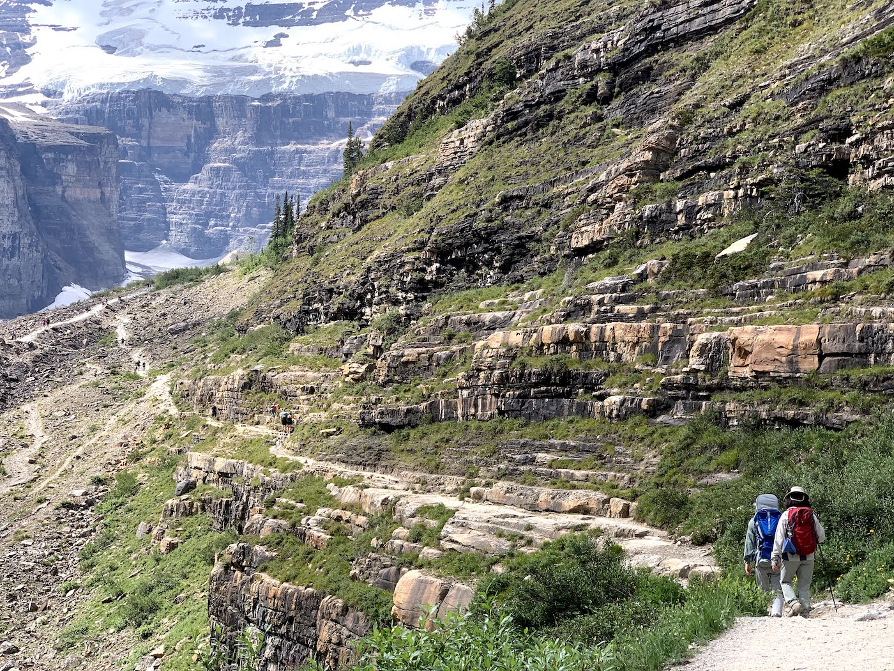

Trailhead Map & Live Weather
Explore Lake Louise
Discover hiking trails around Lake Louise, Alberta
This map provided by OpenStreetMap. Loading it way share your IP address and browser information with a third party.
Map not displaying? Open the map directly on OpenStreetMap.
Current Weather in Lake Louise
loading weather information...
Discover Plain of Six Glaciers
